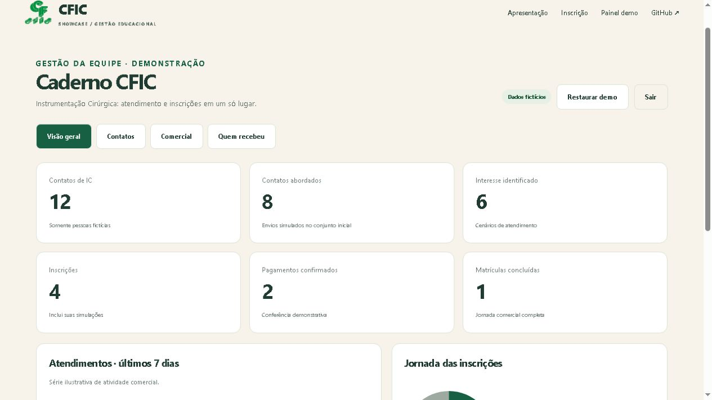

01 / INSCRIÇÕES & OPERAÇÕES
CFIC — Inscrições e Caderno
Da inscrição ao acompanhamento comercial: contatos, comprovantes, contratos e organização de atendimento em um único fluxo.
Demo isolada com dados fictícios; sem acesso ao ambiente institucional.